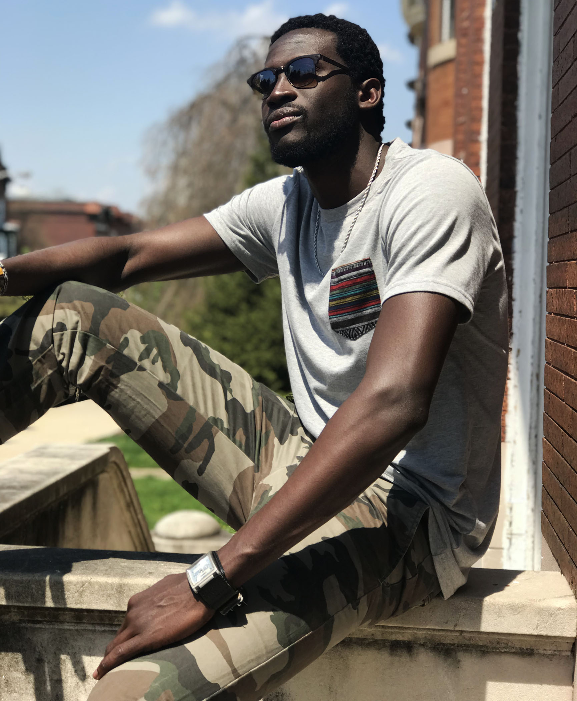

BIO
Comedian, “Jay Hue is the realest and funniest Comedian in the DMV”. His cynical and irreverent persona compliments his nonchalant demeanor, for which he is known. His clever yet convesational style on stage as a stand-up comedian wins his audience over. Hue uses his platform to make light of racial injustices and tensions that he witnesses on a day to day basis in our Nations Capital. Jay’s style is very unique, his skill at improvising, and his creation of multiple impersonations of character in D.C.make for a hilarious mix of thought-provoking observational comedy and side-splitting act outs! Jay can swtich in and out of deadpan one-liners about terrible racial injustices as a black man to “hilarious” storytelling about the black male experience, making him a perfect choice for your white corporate events and private functions!
As a film actor, you may have seen him in the movies, “Do the Right Thing” and “Straight Outta Compton”. He has also featured in television shows on the Black Entertainment Television like, “The Game” and “BET’s Mancave”. Hue has also made small, tiny ass TV appearances on HBO’s “Insecure” and Starz’ “Power” as well as an episode of HGTV’s “Tiny House Hunters”.
Most recently he was a joke writer for the Rickey Smiley TV show and is a regular guest on TV-One's News One Now with Roland Martin.
He currently is a bit writer for the nationally syndicated Tom Joyner Morning Show and has written for comedians George Wallace, Bruce Bruce, and J. Anthony Brown.
Booking
For Booking: jayhuehumor@gmail.com
Socials: @jhuehumor
* reveals secrets
Lmao, here's the real story. My name is Jay Hue and I'm from Washington D.C. Ever since I was a kid, I've always wanted to make people laugh. Making people laugh is like having control over them, to be able to make people laugh and lose control is one of the best feelings in the whole world. I've never been someone who fits in with others, but when I'm up on stage making people laugh, I feel like I'm King of the world!
I've been doing stand up since I was 16,but things got really weird for me when I turned 21 and forgot all of the details from my drunken birthday.
Normally in my routines, I love doing bits about the shit I see on the streets and how cops and people go around treating black people like shit. In a way, I kind of expose them and how they're treating people and create jokes about it to lighten the mood. It wasn't until after that crazy birthday that I started noticing that, anytime I said I joke about some grouchy white lady yelling at a black teen couple or some racist ass cop arresting a nigga on the street for spitting out his gum, that things started happening to them. Like bad things.
The terrible people I had been making jokes about were recieving punishment in all sorts of ways, jail time, trials, accidents, and even death...
I guess the big man in the sky had his own sick sense of humor. I couldn't believe it, God himself was listening to my shows, If I could make God laugh, I can make anyone laugh!